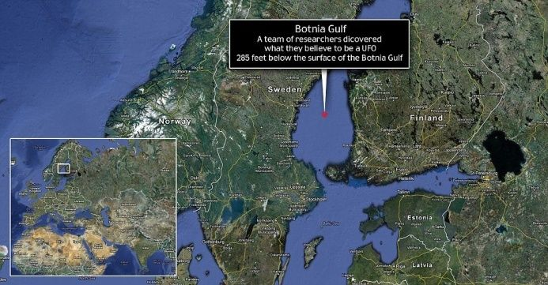
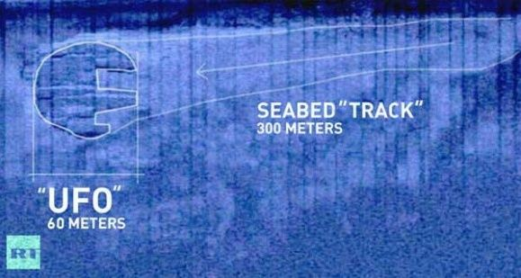
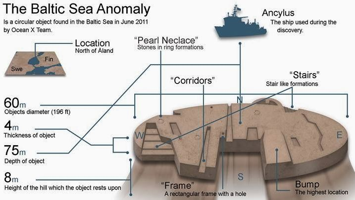
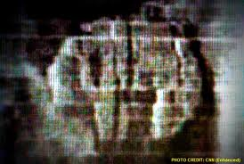
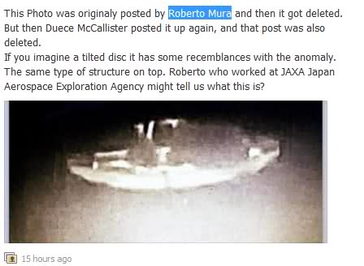
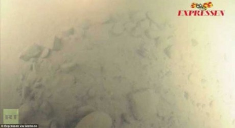

Consider “the Baltic UFO”. This is an “object” that was discovered by sonar in 2011. I have to tell you, this is quite an interesting object, and the story, itself, is also quite interesting. When the story broke in 2011, the Internet was “alive” with buzz concerning the discovery of an undersea “UFO”. The interest peaked throughout the year and then slowly died off into obscurity when it was announced that nothing unusual was found under the water…
Well, the true and real story is much more interesting and curious than what one can find today on the Internet. (Remember, the Internet is constantly being rewritten and history retold with every passing day. The reader should never forget that.)
Indeed, a crashed object was actually found, by sonar, in the Baltic sea on June 19, 2011. It is true, and what’s more, the object had a disc shaped form (60 meters in diameter). From the sonar images it looked identical to an (typical saucer shaped) extraterrestrial UFO. Thus, people began to assume that this object was a sunken crashed mystery UFO.

Further, a debris track and path was clearly visible on the sonar images.
The debris field and impact path were clearly visible on the sonar images released to the public, as well as on the first initially released pictures. But yet, today this is all forgotten. It is believed that nothing lies under the sea, and that only a small cluster of rocks were found.
What make this example of NSA cover-up so interesting is that it was completely unexpected by the NSA. Both Sonar and close up pictures were released to the Internet before a (United States government) task team could be sent to the site to acquire the wreckage. They clearly show a circular disc shaped, (aircraft sized) object, resting on the floor of the Baltic Sea. The images clearly depict a long debris field and associative carved-out track over 360 meters long.
This amazing discovery has been “hushed up” and “repainted” as just a normal ordinary rock of no unique interest to anyone. All of the initial photographs of the object have been deleted from the Internet. The only remaining photos that can be found are the topographical sonar images of relatively low quality. What happened to them? Why are they missing? How could this happen? Are all the photographs and sonar images wrong?
Crashed objects possess characteristics such as debris fields, crash and path marks of linear shape unless they hit a rebounding surface, (underseas) settlement fields that account for drift of submerged objects, and impact mounds. Since this object possessed all these characteristics, it is considered to be crashed.

Background

Let’s just start at the beginning.
The Baltic Sea anomaly is a 60-metre (200 ft) circular formation on the floor of the Baltic Sea. It was discovered by Peter Lindberg, Dennis Åsberg and their Swedish “Ocean X” diving team in June 2011.
The team reported that the sonar has detected a 60 meter in diameter spherical object resting on the floor of the sea. Trailing behind it was a “track” or debris field that extended for 360 meters. In addition, there were “clumps” or groups of other associated objects in the debris track suggestive of a breakup of the rear of the spherical object.
The discovery was made on June 19, 2011 by the team during a dive in the Baltic Sea between Sweden and Finland while searching for an old shipwreck.

Upon discovery the investigation team immediately dove underwater to photograph the object. (This was done before anything was posted on the Internet.)
What they found was not a strange rock formation, as subsequent reports have stated, but rather the presence of a [1] submerged spherical object suggestive of a “flying saucer”. It was [2] clearly circular and had a [3] curved shaped underside. There were [4] rectangular and box shaped areas that were [5] obviously removed or ejected from the rear or aft of the object upon descent. Furthermore there was the [6] presence of a “dome” or tear-drop shaped canopy on the top starboard side of the object.
They immediately released two photographs on the Internet.
The first [1] was the sonar scan of the object as it rested on the sea floor. It showed the object as well as the debris field and “skid” track that the object made when it “crashed”.
The second photograph [2] was of the object itself, as taken by the divers who went down to the object to study it. While one can occasionally find photos of the sonar scan on the Internet today, it is much more difficult to find the close-up photos of the object that was released, as they keep on getting deleted from the Internet servers (!).
In fact, I urge the reader to try to search for the original photographs on the Internet. Try it. They cannot be found.
See the attached picture below. It is a “screen-cut” of the (first) object photo along with the associated commentary of the frustrated person who kept on trying to repost to the Internet. Every time he posted the photo to the Internet, it would “mysteriously” get deleted.

Now, just WHY would the photo be constantly deleted off the Internet? After all, there is no such thing as a UFO. Right?
It’s just a normal event that is misunderstood by the observer. Right?
Well, lucky for us, there are actually photos of the object that you can readily find. Why, my goodness, just look at the “approved” and released photos. Hum. Big change from the initial photo release.
Here is what we are expected to believe the object actually looks like;

History Rewritten
A comparison of the two photos above tells the entire story. The first picture to the left is the original photo of the object as first found. This photo was released to the Internet and disseminated quickly. But every time it was posted or re-posted, it would be deleted. This is the object that was discovered in the Baltic sea. Note that it is indeed spherical and appears to have a curved underside body that is apparently resting on the silt.
The photo next to it is the “official” post-NSA version of the wreckage. Obviously there isn’t any object there. All that remains is just an odd and simple rock formation. The formation looks like a ring of stones with a circular central area devoid of debris. The point is that the two photos are the same place. The second photo show the area with the apparent UFO-shaped object removed. All that a person can see is the circular debris field that surrounds where the object once lay.
Obviously someone came and removed the object because it is no longer there.
Commentary
Through the control of the Internet, the government has rewritten history. They have make access to most of the original photos of the object impossible to procure. Thus the only things that can be found are what the government wants the population to believe. Their now official story is that the objects are but a simple natural rock formation of no significance in any way. Thus, through control of the Internet, media and history, people are now convinced that the Baltic UFO was just a misidentified rock formation.
In a like manner; the professional divers, the professional archeologists, the professional sonar operators and the professional photographers who were on the investigative team onboard the boat were all wrong. They made “honest” mistakes. They could not tell the difference between a scattered pile of rocks and a large saucer shaped object. They did not have the necessary skill to make accurate judgements as to what the object was.
The Actual Story
What happened is that, for reasons entirely unclear, the United States has taken it upon itself to hide all information related to extraterrestrial technology, or unexplainable events, even if it is outside the United States sphere of influence.
The pure truth , and the reason why this example is so special, is because the release of this information and information to the Internet was an unexpected surprise. The immediate reaction by the NSA was to procure ( and then investigate) the object, and rewrite the history surrounding its discovery. The information however, was already irreversibly released, still had to be suppressed. The (MAJestic) acquisition team went out to the site, and had numerous meetings with the owner of the ship and crew that discovered this anomaly. A combination of [1] substantial cash incentives along with [2] time-honed scare tactics was able to suppress any further release of information, and rewrite the discovery into a more conventional explanation.
Obviously a “weather balloon” or “swamp gas” explanation was not a suitable conventional explanation. Instead, the official explanation became one of an “unusual” pile of rocks.
Some interesting links…
Using a technique known as Infrared Spectroscopy, a sample taken from the anomaly by one of the divers was brought back and then subsequently sent for analysis to the Weizmann institute in Israel. The results are very unexpected indeed. The results indicate that a piece which was from the circle anomaly is made of Limonite and Goethite. These materials are part of the Iron oxides/hydroxide family – “that it is metal” and that “these materials would most likely to be found in a modern construction”.
Currently
As it stands today, this object has been “officially” identified as an unusual geologic formation. Mysterious in the way the known geologic process might have caused it to be formed, but not at all associated with extraterrestrial aircraft of any type. All investigations and analysis of this object are through samples, and images provided by NSA front organizations. No purely independent investigations are involved with this object at this time.
“It’s not obviously an alien spacecraft. It’s not made of metal.” - Peter Lindberg
Currently, one can search the Internet for information on this object. There one will find a great deal of analysis and discussions on the samples provided by the NSA. But not one of the discussions and the samples are the originals as obtained directly, and independently from the site itself. What is provided, instead, are the “approved” photos and samples as provided by “official” sources. The NSA writes the reports. The NSA controls and disseminates all the samples. The NSA rewrites and modifies the histories published on the Internet.
This is how the NSA and their MAJestic umbrella controls the dissemination of information that it wants suppressed.
It works. Today, the “Baltic Sea anomaly” refers to “interpretations of an indistinct sonar image“. It does not refer to actual photographs of a disc shaped object lying on the ocean floor.
Baltic Sea anomaly. (Redirected from Baltic Sea UFO) The Baltic Sea anomaly refers to interpretations of an indistinct sonar image taken by Peter Lindberg, Dennis Åsberg and their Swedish "Ocean X" diving team while treasure hunting on the floor of the northern Baltic Sea at the center of the Bothnian Sea in June 2011. -Wikipedia
Takeaways
- An object was discovered under the water in the Baltic sea.
- The object had the shape of a conventionally understood “extraterrestrial source” UFO.
- The discovers posted detailed photos and sonar scans of the object on the Internet.
- The detailed photos were taken down, and it is nearly impossible to find them on the Internet today.
- Someone removed the object from where it was found.
- Once the object was removed, photos of the empty debris field was posted on the Internet.
- Today, the Baltic UFO is considered a trivial misunderstanding of a discovery of some normal rocks on the sea floor.
FAQ
Q: What is the Baltic UFO?
A: It is a large saucer shaped object that left a long crash skid mark and debris field. It was found under the Baltic sea in 2011.
Q: Is the object actually a UFO?
A: No. It is called a UFO simply because it resembles a saucer-shaped UFO.
Q: Who moved the object?
A: That is unknown. However, the person or organization that did so had the financial resources to do so, and the political pull to erase and rewrite history. It certainly seems to be the work of elements of the United States government. If so, then the hand of the NSA could possibly be at work. I cannot positively state that it was MAJestic. However, I am sure that some elements of MAJestic might have been aware of the effort.
Q: Why was the object moved?
A: There are two reasons. [1] To reverse engineer, study and record the object. [2] To keep all knowledge of extraterrestrial technology, and events secret from the general populace.
Q: What is the statist explanation of the Baltic UFO?
A: It’s just a normal pile of “everyday” rocks on the bottom of the seafloor.
MAJestic Related Posts – Training
These are posts and articles that revolve around how I was recruited for MAJestic and my training. Also discussed is the nature of secret programs. I really do not know why the organization was kept so secret. It really wasn’t because of any kind of military concern, and the technologies were way too involved for any kind of information transfer. The only conclusion that I can come to is that we were obligated to maintain secrecy at the behalf of our extraterrestrial benefactors.


MAJestic Related Posts – Our Universe
These particular posts are concerned about the universe that we are all part of. Being entangled as I was, and involved in the crazy things that I was, I was given some insight. This insight wasn’t anything super special. Rather it offered me perception along with advantage. Here, I try to impart some of that knowledge through discussion.
Enjoy.


MAJestic Related Posts – World-Line Travel
These posts are related to “reality slides”. Other more common terms are “world-line travel”, or the MWI. What people fail to grasp is that when a person has the ability to slide into a different reality (pass into a different world-line), they are able to “touch” Heaven to some extent. Here are posts that cover this topic.


John Titor Related Posts
Another person, collectively known by the identity of “John Titor” claimed to utilize world-line (MWI egress) travel to collect artifacts from the past. He is an interesting subject to discuss. Here we have multiple posts in this regard.
They are;